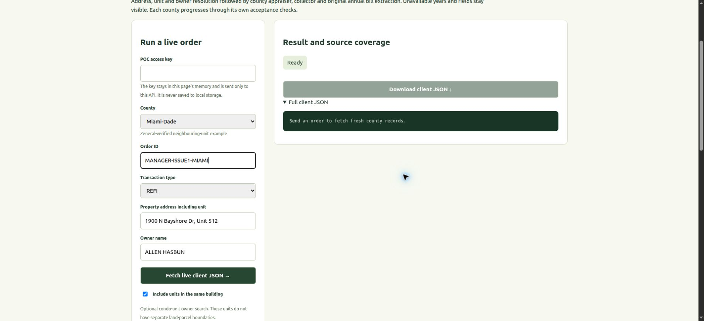
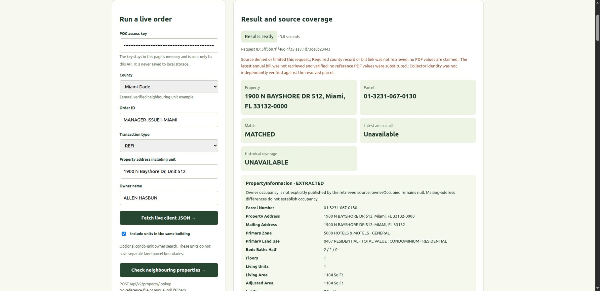

1 · Missing delinquent tax information
Production: matching inputs prepared, NOT RUN. Staging: actual live result. Parser verified offline; live collector blocked
LEFT · taxes.zeneral.ai · prepared, NOT RUN
RIGHT · changed Linux staging · LIVE RESULT
Open index.html for full test inputs, all fields and acceptance limitations.